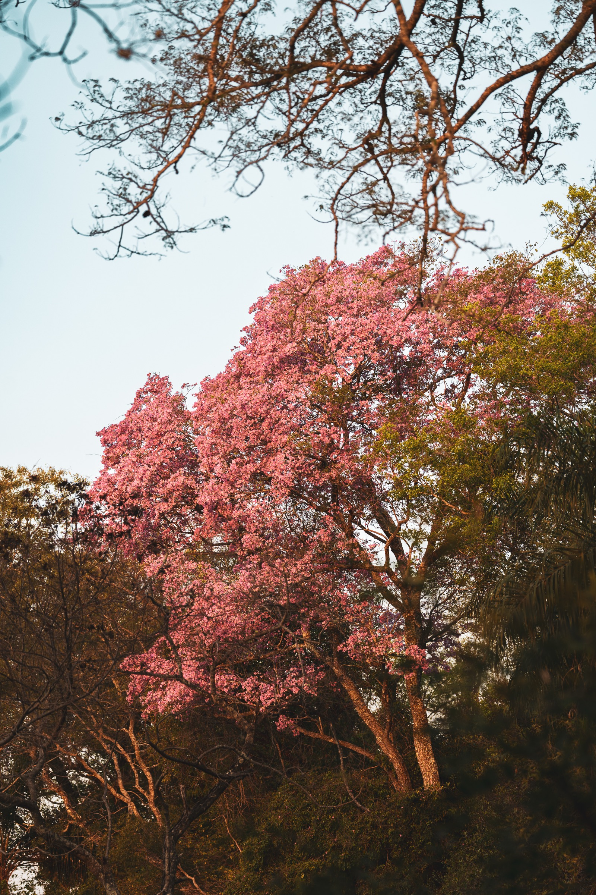
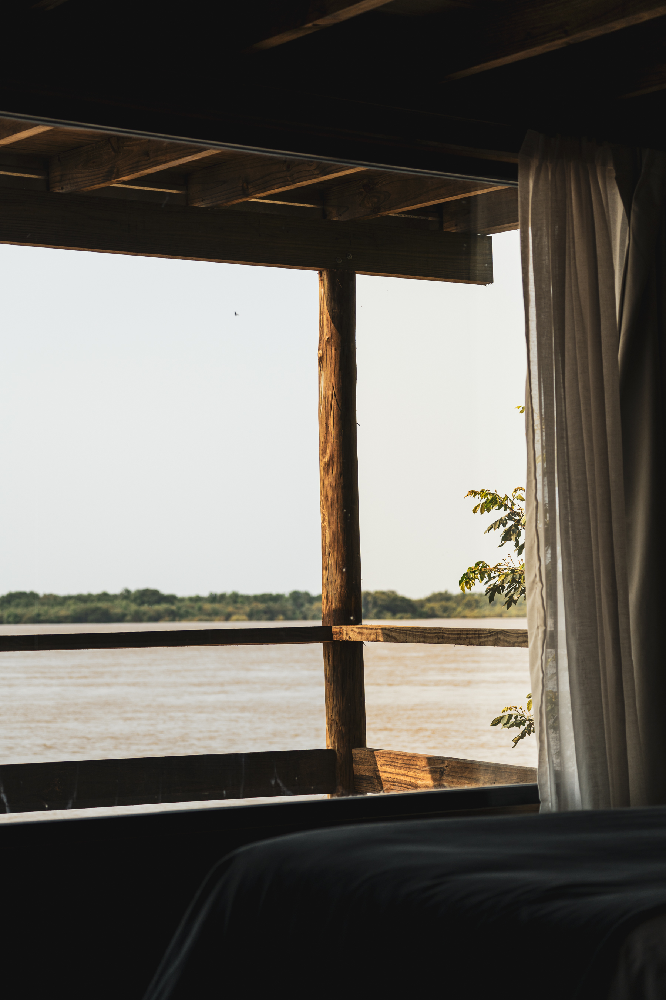
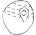
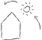
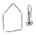
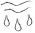
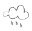
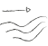

Arquitectura en armonía
con el clima y la naturaleza.
Lo que hacemos
Entre lo salvaje y las personas.
Timbó es un estudio de arquitectura, diseño, consultoría e investigación con origen en Buenos Aires. Comprometido con contribuir a un futuro bajo en carbono, permite a las personas experimentar la naturaleza en su máxima expresión.


Diseño resiliente yadaptadoa las condicionesambientales
Mediante el análisis de datos climáticos, los proyectos se adaptan a las condiciones específicas de cada lugar, asegurando una baja demanda energética y una alta calidad ambiental tanto en espacios interiores como exteriores.
VER MÁS
Zona
climática

Trayectoria
solar

Temperatura
exterior

Humedad

Precipitación

Patrones
de viento
Cobertura
del cielo

La arquitectura establece un diálogo duradero entre sus ocupantes y el mundo natural.